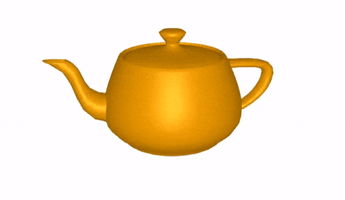

Flux3D: 3D Deep Learning Library in Julia
Flux3D.jl is a 3D vision library, written completely in Julia. This package utilizes Flux.jl and Zygote.jl as its building blocks for training 3D vision models and for supporting differentiation. This package also have support of CUDA GPU acceleration with CUDA.jl.The primary motivation for this library is to provide:
- Batched Data structure for 3D data like PointCloud, TriMesh and VoxelGrid for storing and computation.
- Transforms and general utilities for processing 3D structures.
- Metrics for defining loss objectives and predefined 3D models.
- Easy access to loading and pre-processing standard 3D datasets.
- Visualization utilities for PointCloud, TriMesh and VoxelGrid.
- Inter-Conversion between different 3D structures.
Any suggestions, issues and pull requests are most welcome.

Installation
This package is under active development but it is stable enough for use in 3D Machine Learning Research. It has been registered. To install the latest release, type the following in the Julia 1.3+ prompt.
julia> ] add Flux3DTo install the master branch type the following
julia> ] add Flux3D#masterRendering of 3D structure is done using Makie. Therefore, for visualization purpose we will be required to install Makie and compatible backend (GLMakie or WGLMakie). To install it simply run ] add Makie in the julia prompt.
Citation
If you use this software as a part of your research or teaching, please cite this github repository. For convenience, we have also provided the bibtex entry in the form of CITATION.bib file in our github repo.
@misc{Suthar2020,
author = {Nirmal Suthar, Avik Pal, Dhairya Gandhi},
title = {Flux3D: A Framework for 3D Deep Learning in Julia},
year = {2020},
publisher = {GitHub},
journal = {GitHub repository},
howpublished = {\url{https://github.com/FluxML/Flux3D.jl}},
}